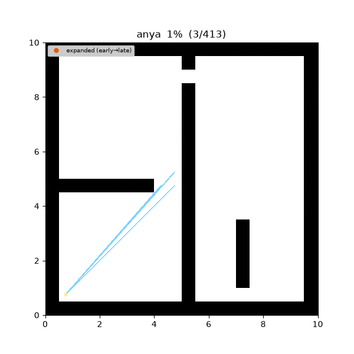
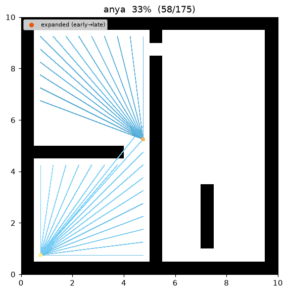
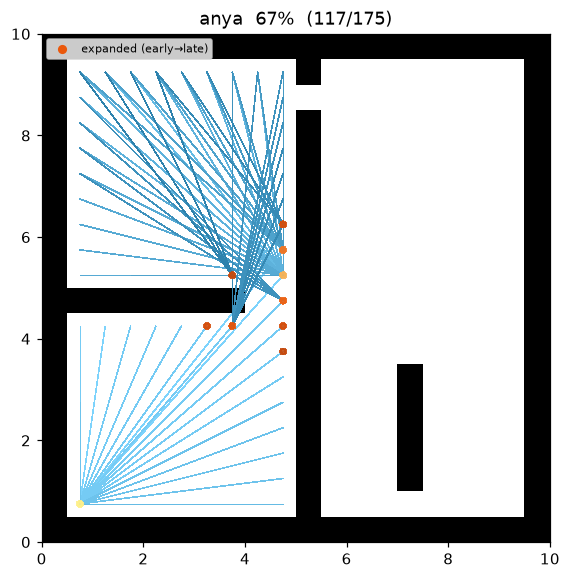
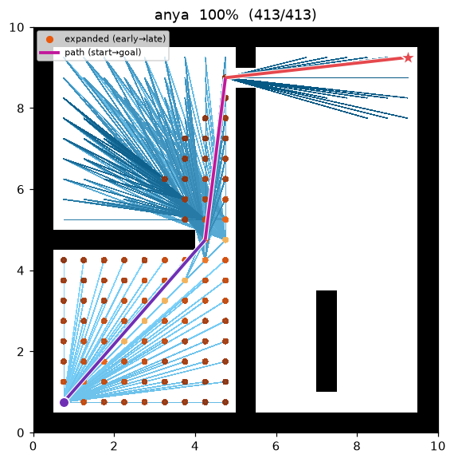

Anya (optimal any-angle)¶
| 항목 | 내용 |
|---|---|
| 분류 | optimal any-angle graph search (interval search) |
| 요구 capability | LineOfSightSpace (neighbors + heuristic + line_of_sight) |
| 완전성 | complete (유한 grid, 비음수 비용) |
| 최적성 | 참 연속 Euclidean 최단 any-angle 경로 (Harabor et al. 2016) 1 |
| 복잡도 | corner 당 interval projection sweep 1회 (LOS 검사 수반) |
| 원 논문 | Harabor, Grastien, Öz & Aksakalli (2016) 1 · LOS supercover: Amanatides & Woo (1987) 3 · A*: Hart, Nilsson & Raphael (1968) 4 |
배경¶
Theta*2 나 Visibility A* 같은 any-angle 계열은 경로를 grid 셀 중심에 얹은 채 직선 지름길만 취한다. 그래서 이들은 참 최단이 아니라 셀 중심 근사다 — 진짜 최단 경로가 어느 셀 중심에도 놓이지 않는 장애물 모서리(코너) 에서 꺾여야 할 때, 셀 중심에 갇힌 경로는 그보다 조금 길어진다.
Anya1 는 탐색 노드를 (root, interval) 쌍으로 둔다. interval 은 한 grid 행(row)
위 연속 구간(끝점은 grid vertex 좌표, float)이고, root 는 그 구간의 모든 점에서 보이는 grid
corner(vertex) 다. 다각형(블록 셀) 영역에서 최단 Euclidean 경로는 팽팽히 당긴 실(taut string)
로 볼록 장애물 코너에서만 꺾이므로, 꺾임점(root)을 정확히 그 코너에 놓으면 Anya 는 셀 중심
근사가 아닌 참 연속 Euclidean 최단 any-angle 경로를 돌려준다. 이것이 Visibility A*/Theta*
와의 본질적 차이다.
이 저장소 maze01 에서 Anya 는 cost 26.802 · 4 waypoint 로, 같은 인스턴스의 Visibility
A*/Theta* (27.748) 보다 엄밀히 짧다 — 셀 중심 대신 코너에서 꺾기 때문이다.
동작 원리¶
maze01 에서의 탐색. 확장된 노드(코너 root)에서 뻗는 sky 색 부채꼴이 interval projection
(root 의 가시성을 행 단위로 투영)이고, 최종 경로는 장애물 코너만 스치는 성근 직선 다각선이다.

탐색 중간 과정 (좌 → 우: 초반 / 중반 / 최종 경로):
 |
 |
 |
ANYA(start, goal):
g[start] ← 0
open ← priority queue keyed by f = g(root) + ‖root − goal‖ # admissible 직선 하한
push start
while open not empty:
root ← open.pop_min() # 코너(또는 start), 한 번만 settle
if f(root) ≥ best_goal_cost: break
if line_of_sight(root, goal): # 마지막 leg: 코너에서 goal 직접 보임
relax goal via root
for (corner, interval) in SUCCESSORS(root): # interval projection
relax g[corner] ← g[root] + ‖root − corner‖
return reconstruct(goal)
SUCCESSORS(root): # (root, interval) 노드 생성
for dir in {위, 아래}: # --- cone successors (부채꼴) ---
I ← root 에서 보이는 인접 행 위의 visible interval
while I 가 비어있지 않음:
emit I 안의 모든 볼록 장애물 코너 # = 새로운 turning point(root)
I ← project(I, root, 다음 행) 를 벽에서 분할 # 한 행 더 멀리 투영
for dir in {왼쪽, 오른쪽}: # --- flat successors (같은 행) ---
root 의 행을 따라 걸으며 도달 가능한 코너를 emit
Interval projection — cone / flat successor¶
root 를 확장하면 그 가시성을 행 단위로 투영한다. 인접 행으로 퍼지는 부채꼴이 cone
successor, root 와 같은 행을 따라 뻗는 구간이 flat successor 다. 투영된 interval 은 그 사이
셀-행의 장애물 벽에서 잘려 최대 관찰가능(observable) 구간들로 쪼개지며, 벽이 만드는 볼록 코너가
새로운 root 가 된다. 코너는 유한하므로 탐색은 셀 단위 완화가 아니라 코너 그래프 위의 A*
이고, interval 이 그 successor(첫 코너들)를 발굴한다.
Line of sight — corner 기하¶
Anya 의 turning point 는 셀 중심이 아니라 grid vertex 이므로, 가시성도 corner 기하로 판정한다:
선분이 어떤 블록 셀 내부(interior) 도 지나지 않고, 두 대각 블록 셀 사이의 pinch 코너를
관통하지 않을 때 통과 가능하다(neighbors() 의 corner-cut 금지와 동일 모델). 중요한 것은
모서리 스침(edge-grazing) 이다: grid 선(정수 x 또는 y) 위에 정확히 놓인 선분은 셀 경계만
스칠 뿐 내부를 통과하지 않으므로, 한쪽 셀이 블록이어도 다른 쪽이 free 면 통과 가능하다 —
장애물 코너를 팽팽히 감싸는 taut 경로가 여기서 나온다. (경계 표본을 floor 로 한쪽 셀에 스냅하면
이런 유효한 스침 선분을 잘못 금지해 참 Euclidean 최적을 놓친다.) capability 의 line_of_sight 는
셀 중심 쌍만 답하므로 corner 끝점을 표현할 수 없어, corner LOS 는 여기서 직접 계산한다.
Heuristic — 유클리드 직선 하한¶
frontier 의 우선순위는 f = g(root) + ‖root − goal‖ 다. ‖root − goal‖ 는 어떤 feasible 경로도
직선거리보다 짧을 수 없다는 삼각부등식에서 admissible 하한이다. 원 논문은 interval 반대편에 goal 이
있을 때 goal 을 그 행에 대해 반사(reflection) 해 더 팽팽한 per-interval 하한 h(root, I) 를
쓰지만(확장 노드를 줄이는 최적화), 직선 하한만으로도 admissibility 와 최적성은 보장된다.
측정치 (Python, trace on · 같은 인스턴스 비교):
| map | Anya cost | Visibility A* cost | Theta* cost | Anya expanded | Anya waypoints |
|---|---|---|---|---|---|
| maze01 | 26.802 | 27.748 | 27.748 | 38 | 4 |
재현:
python python/demos/demo_anya.py \
--map maps/grid/maze01.yaml --scenario maps/scenarios/maze01_s1.yaml \
--params configs/global_planning/anya.yaml --trace out/anya.jsonl
python tools/viz/replay.py out/anya.jsonl --gif out/anya.gif --snapshots out/anya_snaps/
성질¶
- 완전성: 유한 grid + 비음수 비용에서 완전.
- 최적성: 코너를 turning point 로 허용하므로 참 연속 Euclidean 최단 any-angle 경로를
반환한다1. Visibility A*/Theta* 의 셀 중심 근사와 달리 셀 중심 제약이 없다. 단 이
최적성은 corner-cutting 금지 모델(두 대각 블록 셀 사이 pinch 를 관통하지 못함) 아래의
taut-string 최적이다 — 모서리 스침은 허용하되 대각 pinch 관통은 막는,
neighbors()와 동일한 통행 규칙에서의 최단이다. - 품질: 반환 경로 비용은 항상 같은 격자의 Visibility A*/Theta* 이하다 — 셀 중심 최적은 코너 최적의 상계이기 때문(이 저장소 maze01: Anya 26.802 ≤ Visibility 27.748).
- occupancy 관측: 알고리즘은
neighbors()로 도달 가능한 free 성분만 관측하고, 그 밖(다른 성분·장애물·경계 밖)은 블록으로 본다. 즉 최적성은 grid 로 연결된 영역 위에서 성립한다. - 경로 표현: 반환
path는 공용list[Cell]/viz 계약을 위해 코너를 인접 free 셀로 스냅해 담는다.cost는 스냅이 아닌 정확한 코너 기하 Euclidean 길이다.
참 Euclidean 최적성 (왜 코너인가)¶
기호. 블록 셀의 합집합을 장애물로 갖는 평면 영역 \(F\subseteq\mathbb{R}^2\) 에서, feasible 경로는 \(F\) 안에 있는 꺾은선이고 비용은 유클리드 길이의 합이다. \(C^\ast\) 는 start→goal 최소 비용.
명제 (최단 경로는 볼록 코너에서만 꺾인다). \(F\) 의 경계가 다각형(축 정렬 단위 정사각형의 합집합 경계)일 때, start→goal 최단 경로 \(P^\ast\) 의 내부 꺾임점은 모두 장애물의 볼록 정점(reflex vertex of \(F\)) 이다.
근거. 꺾임점 \(v\) 가 장애물 정점이 아니라면 \(v\) 의 작은 근방이 온전히 \(F\) 안에 있으므로, \(v\) 를 지나는 두 선분을 국소적으로 곧게 펴 삼각부등식으로 길이를 엄밀히 줄일 수 있다 — \(P^\ast\) 최소성에 모순. 따라서 모든 꺾임점은 자유공간을 국소적으로 볼록하게 막는 장애물 정점, 즉 grid corner 다. ∎
따름정리 (Anya 는 \(C^\ast\) 를 찾는다). 최적 경로의 각 선분은 두 코너(또는 start/goal)를 잇는 taut 한 visible 직선이다. Anya 의 interval sweep 은 각 root 에서 이런 taut visible 코너를 successor 로 발굴하고, \(g(\text{root})\) 를 start→root 실제 유클리드 길이로 유지하며 admissible \(h\) 로 A* 를 돌린다. 최적 경로가 쓰는 간선은 모두 이 successor 집합에 포함되므로 best-first 확장은 \(C^\ast\) 로 수렴한다. Visibility A*/Theta* 가 꺾임을 셀 중심으로 제한해 \(C^\ast\) 를 놓치는 지점을, Anya 는 코너를 허용해 정확히 복원한다. ∎
파라미터¶
| 이름 | 타입 | 기본값 | 범위 | 설명 |
|---|---|---|---|---|
vertex_epsilon |
float | 1e-9 | [1e-12, 1e-3] | grid vertex/pinch 판정 float 허용오차. 동작 튜닝 knob 이 아니며 경로 최적성에 영향 없음 |
Anya 는 최적 알고리즘이라 품질-속도 trade-off knob 이 없다(가중치를 주면 최적성이 깨진다).
vertex_epsilon 은 순수 수치 안정용이다.
방출 trace 이벤트¶
planning_started → (node_expanded, candidate_evaluated, edge_added)* → path_found → planning_finished
node_expanded 는 확장된 코너 root, edge_added(state=corner, parent=root) 는 taut any-angle
간선이다. edge_added 의 data 는 그 코너가 발굴된 (root, interval) 노드를 셀-인덱스 좌표
{row, col_lo, col_hi} 로 실어(Visibility A* 와 동일 규약) viz 가 interval 을 그릴 수 있게 한다.
References¶
-
Harabor, D., Grastien, A., Öz, D., & Aksakalli, V. (2016). "Optimal Any-Angle Pathfinding In Practice." Journal of Artificial Intelligence Research, 56, 89–118. doi:10.1613/jair.5007 ↩↩↩↩
-
Nash, A., Daniel, K., Koenig, S., & Felner, A. (2007). "Theta*: Any-Angle Path Planning on Grids." Proc. AAAI Conference on Artificial Intelligence, 1177–1183. PDF ↩
-
Amanatides, J., & Woo, A. (1987). "A Fast Voxel Traversal Algorithm for Ray Tracing." Proc. Eurographics, 3–10. PDF ↩
-
Hart, P. E., Nilsson, N. J., & Raphael, B. (1968). "A Formal Basis for the Heuristic Determination of Minimum Cost Paths." IEEE Transactions on Systems Science and Cybernetics, 4(2), 100–107. doi:10.1109/TSSC.1968.300136 ↩